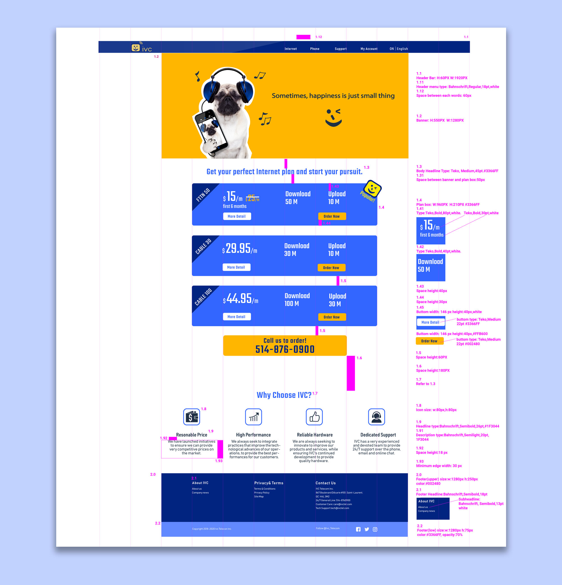

Case 1: IVC Telecom Website
1. Confirm the goals
After the kick-off meeting with all stakeholders, the goal of this new website was set: Bring a happy using experience by presenting user-friendly interface and simplified order-making process.
2. Define the Scope
The project was divided into 4 main phrases.
Phrase 1: Site map, wire frames, style mock-ups, content building.
Phrase 2. Web page interface creating based on approved wireframes and possible revision.
Phrase 3. Design & design specification finalization for coding.
Phrase 4. Coding implements.
3. UX/UI process
3.1 Site structure and wireframes
At the very beginning of this project, we have confirmed that the website will be just about internet plan and maybe 1or 2 related service, so the site structure is flat and straightforward.
After an efficient card sorting meeting, the topics from content within the website had been sorted out. Based on that, I made the wireframes to present all the topics we selected. And they were confirmed by the management.
3.2 Color! Color! Color!
Choosing an appropriate color combination in the website design process is considered one of the most important steps in creating a successful website. To avoid going into a dead-end and also to have more feedback,I came up with 4 different color theme.
Unfortunately, none of these get a 100% overwhelming winning.(designer need a strong heart.) My manager suggested me maybe I can try some color close to The flag of Quebec, since the website targets to QC area. And this color strategy was approved by the most management.
3.3 Style
We planed to put banner on each page, so it will be the first sight when visitor open the page which means how people feel about the banners will affect how they feel about the page. The pop art style came to my mind firstly,cuz it contains bright color, exaggerated icons and it's challenging spirit. After creating a pop art style banner, I took some time to crunch the origin idea of building this website and got some inspiration when I walked my dog" Lemon". And then I created 2nd banner which using cute puppies. Emotionally, puppy element can bring out a more friendly feeling and create a relax "home" feeling to our website. This version got more support than pop art style.
3.4 Page visualization (Logic and Emotion)
Web page is a mix of color, type, shape, words, paragraphs, etc. in a logical way. And I believe less is more in a visual presenting. So I made sure all the pages should have the bare minimum content to help people decide where they want to go next. Also, I used consistent type/color/shape scale and a restrained use of puppy picture create a relax rhythm on each page that helps users focus.
3.5 Order placement (See it, achieve it)
Once finished all the web page mock-ups, I need to apply the design style to order placement page. A progress bar was built in all the order placing and confirmation pages so that the user knows what information s(he) has to fill at each stage. This also breaks down the process into chunks and the user is not burdened with everything on one page.
The visual hierarchy is also displayed based on different content importance. This gives visitors the clarity to understand the actions they need to take to finish the process.
3.6 Customer portal (Functionality is always the first!)
3.7 Design Specification
The design spec is a must because it communicates designer's language to a developer's language. It creates the opportunity for the developers to visualize and accurately collect the information from designer. A clear annotation is always better than a guessing.

The website was published to public on September 1st, 2019. By the end of December, the average orders we got each day is 11 and we got highest orders which is 135 orders on Boxing Day. Our data specialist told me it's a good performance for a brand new website.
Looking back on this project, there's a lot moments are unforgettable. What impressed me the most is not when my design got approved but is when I kept trying to create a better solution for users maybe it's just a button.
And somehow I feel pity that we didn't have a chance to do the usability testing so we could have more chance to make it better. I might suggest to have an internal usability testing in the future to improve the website.
UX/UI CASE2
Graphic

About

And somehow I feel pity that we didn't have a chance to do the usability testing so we could have more chance to make it better. I might suggest to have an internal usability testing in the future to improve the website.